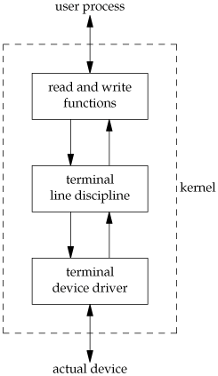
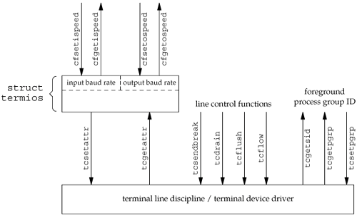

18.2. OverviewTerminal I/O has two modes:
If we don't do anything special, canonical mode is the default. For example, if the shell redirects standard input to the terminal and we use read and write to copy standard input to standard output, the terminal is in canonical mode, and each read returns at most one line. Programs that manipulate the entire screen, such as the vi editor, use noncanonical mode, since the commands may be single characters and are not terminated by newlines. Also, this editor doesn't want processing by the system of the special characters, since they may overlap with the editor commands. For example, the Control-D character is often the end-of-file character for the terminal, but it's also a vi command to scroll down one-half screen.
POSIX.1 defines 11 special input characters, 9 of which we can change. We've been using some of these throughout the text: the end-of-file character (usually Control-D) and the suspend character (usually Control-Z), for example. Section 18.3 describes each of these characters. We can think of a terminal device as being controlled by a terminal driver, usually within the kernel. Each terminal device has an input queue and an output queue, shown in Figure 18.1. Figure 18.1. Logical picture of input and output queues for a terminal device
There are several points to consider from this picture.
Most UNIX systems implement all the canonical processing in a module called the terminal line discipline. We can think of this module as a box that sits between the kernel's generic read and write functions and the actual device driver (see Figure 18.2). Figure 18.2. Terminal line discipline Note the similarity of this picture and the diagram of a stream shown in Figure 14.14. We'll return to this picture in Chapter 19, when we discuss pseudo terminals. All the terminal device characteristics that we can examine and change are contained in a termios structure. This structure is defined in the header <termios.h>, which we use throughout this chapter:
struct termios {
tcflag_t c_iflag; /* input flags */
tcflag_t c_oflag; /* output flags */
tcflag_t c_cflag; /* control flags */
tcflag_t c_lflag; /* local flags */
cc_t c_cc[NCCS]; /* control characters */
};
Roughly speaking, the input flags control the input of characters by the terminal device driver (strip eighth bit on input, enable input parity checking, etc.), the output flags control the driver output (perform output processing, map newline to CR/LF, etc.), the control flags affect the RS-232 serial lines (ignore modem status lines, one or two stop bits per character, etc.), and the local flags affect the interface between the driver and the user (echo on or off, visually erase characters, enable terminal-generated signals, job control stop signal for background output, etc.). The type tcflag_t is big enough to hold each of the flag values and is often defined as an unsigned int or an unsigned long. The c_cc array contains all the special characters that we can change. NCCS is the number of elements in this array and is typically between 15 and 20 (since most implementations of the UNIX System support more than the 11 POSIX-defined special characters). The cc_t type is large enough to hold each special character and is typically an unsigned char.
Figures 18.3 through 18.6 list all the terminal flags that we can change to affect the characteristics of a terminal device. Note that even though the Single UNIX Specification defines a common subset that all platforms start from, all the implementations have their own additions. Most of these additions come from the historical differences between the systems. We'll discuss each of these flag values in detail in Section 18.5.
Given all the options available, how do we examine and change these characteristics of a terminal device? Figure 18.7 summarizes the various functions defined by the Single UNIX Specification that operate on terminal devices. (All the functions listed are part of the base POSIX specification, except for tcgetsid, which is an XSI extension. We described tcgetpgrp, tcgetsid, and tcsetpgrp in Section 9.7.)
Note that the Single UNIX Specification doesn't use the classic ioctl on terminal devices. Instead, it uses the 13 functions shown in Figure 18.7. The reason is that the ioctl function for terminal devices uses a different data type for its final argument, which depends on the action being performed. This makes type checking of the arguments impossible. Although only 13 functions operate on terminal devices, the first two functions in Figure 18.7 (tcgetattr and tcsetattr) manipulate almost 70 different flags (see Figures 18.3 through 18.6). The handling of terminal devices is complicated by the large number of options available for terminal devices and trying to determine which options are required for a particular device (be it a terminal, modem, printer, or whatever). The relationships among the 13 functions shown in Figure 18.7 are shown in Figure 18.8. Figure 18.8. Relationships among the terminal-related functionsPOSIX.1 doesn't specify where in the termios structure the baud rate information is stored; that is an implementation detail. Some systems, such as Linux and Solaris, store this information in the c_cflag field. BSD-derived systems, such as FreeBSD and Mac OS X, have two separate fields in the structure: one for the input speed and one for the output speed. |